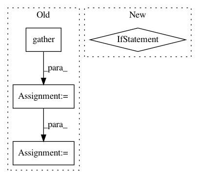

cb556a585da0b65d28d2fc7d52c3851ac1a7d369,open_seq2seq/utils/utils.py,,get_results_for_epoch,#Any#Any#Any#Any#Any#,202
Before Change
if compute_loss:
total_samples_all = MPI.COMM_WORLD.gather(total_samples)
total_loss_all = MPI.COMM_WORLD.gather(total_loss)
results_per_batch_all = MPI.COMM_WORLD.gather(results_per_batch)
MPI.COMM_WORLD.Barrier()
if MPI.COMM_WORLD.Get_rank() != 0:
// returning dummy tuple of correct shape
if compute_loss:
return None, None
else:
return None
if compute_loss:
total_loss = np.sum(total_loss_all)
total_samples = np.sum(total_samples_all)
// moving GPU dimension into the batch dimension
results_per_batch = [item for sl in results_per_batch_all for item in sl]
if compute_loss:
total_loss /= total_samples
return results_per_batch, total_loss
return results_per_batch
After Change
else:
return None
if compute_loss:
return results_per_batch, total_loss / total_samples
else:
return results_per_batch
def log_summaries_from_dict(dict_to_log, output_dir, step):
// this returns the same writer as was created by
// the first call to this function
sm_writer = tf.summary.FileWriterCache.get(output_dir)
In pattern: SUPERPATTERN
Frequency: 4
Non-data size: 4
Instances
Project Name: NVIDIA/OpenSeq2Seq
Commit Name: cb556a585da0b65d28d2fc7d52c3851ac1a7d369
Time: 2018-05-30
Author: igor.a.gitman@gmail.com
File Name: open_seq2seq/utils/utils.py
Class Name:
Method Name: get_results_for_epoch
Project Name: rusty1s/pytorch_geometric
Commit Name: 51b53dcbab8ec7ab0b6e8a64284a919db2d2254a
Time: 2018-05-08
Author: matthias.fey@tu-dortmund.de
File Name: torch_geometric/transform/local_cartesian.py
Class Name: LocalCartesian
Method Name: __call__
Project Name: keras-team/keras
Commit Name: b95fcf7f52aca8ad0b1afb3cfc64c8eed534fafe
Time: 2017-07-29
Author: me@taehoonlee.com
File Name: tests/keras/backend/backend_test.py
Class Name: TestBackend
Method Name: test_gather
Project Name: allenai/allennlp
Commit Name: 5ad7a33a04d8829ad3439b5f9390bd136105f986
Time: 2020-05-28
Author: tobiasr@allenai.org
File Name: allennlp/nn/beam_search.py
Class Name: BeamSearch
Method Name: search